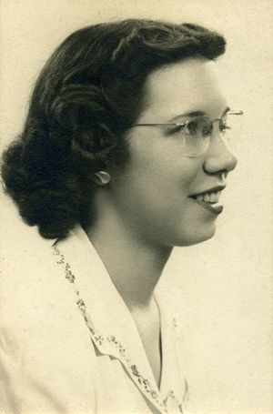

Top Secret Rosies
Biografia
Top Secret Rosies son un grupo de mujeres que fueron reclutadas por el ejército de Estados Unidos para programar, con uno de los primeros ordenadores, ENIAC. Realizaban cálculos de balística en la Universidad de Pennsylvania en la década de 1940.
Este grupo era un gran activo para las fuerzas aliadas y estaba formado por:
Frances Elizabeth Snyder nació en Filadelfia en 1917. En su primer día de clases en la Universidad de Pennsylvania, el profesor de matemática de Betty le dijo que debería quedarse en su casa criando niños en lugar de perder tiempo tratando de obtener un título en matemáticas. Este intento de desmoralizarla dio sus frutos. Betty se cambió de carrera y comenzó a estudiar periodismo, justamente porque esta carrera distaba mucho de su vocación por la matemática y era además una de las pocas carreras universitarias abiertas al estudiantado femenino en aquellos años. Betty fue contratada por el Moore School of Engineering para trabajar como calculista y pronto fue seleccionada como una de las seis mujeres que programaron el ENIAC.
Frances Bilas nació en 1922 en Filadelfia. Asistió a la universidad pública de Temple donde al poco tiempo le otorgó una beca para Chestnut Hill College en Filadelfia; Se especializó en matemáticas con orientación en física. Alterno sus estudios en la universidad con docencia en la escuela Simón Gratz en Filadelfia. Fue compañera y amiga de Kathleen Mcnulty, y se graduaron juntas en 1942; al poco tiempo fueron contratadas como “ordenadores” humanos por el Ejército de Estados Unidos para trabajar en la escuela Moore de Ingeniería en la Universidad de Pensilvania, y a partir de 1945 en la ENIAC.
Asistió a la universidad pública de Temple donde al poco tiempo le otorgó una beca para Chestnut Hill College en Filadelfia; Se especializó en matemáticas con orientación en física. Alterno sus estudios en la universidad con docencia en la escuela Simón Gratz en Filadelfia. Fue compañera y amiga de Kathleen Mcnulty, y se graduaron juntas en 1942; al poco tiempo fueron contratadas como “ordenadores” humanos por el Ejército de Estados Unidos para trabajar en la escuela Moore de Ingeniería en la Universidad de Pensilvania, y a partir de 1945 en la ENIAC.
Nació el 27 de diciembre de 1924, en Gentry, Misuri. Estudió en el Northwest Missouri State Teachers College, donde obtuvo un título en matemáticas. En 1945 fue contratada por la Universidad de Pensilvania para trabajar bajo las órdenes del ejército. Cuando comenzó el trabajo sobre la máquina ENIAC para cálculo de trayectorias balísticas, fue seleccionada como una de sus primeras programadoras. Luego Bartik fue elegida para formar parte del equipo de trabajo que tomó la tarea de convertir la ENIAC en una computadora con programas almacenados. En su primera implementación, la ENIAC se programaba mediante la combinación de conexiones y cables. Luego de trabajar con ENIAC, continuó trabajando con BINAC y UNIVAC I.
Estudió en el Northwest Missouri State Teachers College, donde obtuvo un título en matemáticas. En 1945 fue contratada por la Universidad de Pensilvania para trabajar bajo las órdenes del ejército. Cuando comenzó el trabajo sobre la máquina ENIAC para cálculo de trayectorias balísticas, fue seleccionada como una de sus primeras programadoras. Luego Bartik fue elegida para formar parte del equipo de trabajo que tomó la tarea de convertir la ENIAC en una computadora con programas almacenados. En su primera implementación, la ENIAC se programaba mediante la combinación de conexiones y cables. Luego de trabajar con ENIAC, continuó trabajando con BINAC y UNIVAC I.
Katleen "Kay" McNulty Mauchly Antonelli.  Fue una de las primeras mujeres programadoras y pioneras de la computación y fue una de las seis programadoras originales de la computadora ENIAC, la primera computadora digital electrónica de propósito general. McNulty nació en el Condado de Donegal durante las guerras de independencia de su país. La noche de su nacimiento, su padre, que era un oficial del Ejército Republicano Irlandés, fue arrestado durante dos años. Tras su liberación, la familia emigró a los Estados Unidos en octubre de 1924 y se afincó en Pennsylvania donde James McNulty estableció sus negocios. Para entonces, Kathleen no era capaz de hablar inglés pues su lengua materna era el gaélico. De hecho, se sabe que recordaría sus oraciones en gaélico por el resto de sus días.
Fue una de las primeras mujeres programadoras y pioneras de la computación y fue una de las seis programadoras originales de la computadora ENIAC, la primera computadora digital electrónica de propósito general. McNulty nació en el Condado de Donegal durante las guerras de independencia de su país. La noche de su nacimiento, su padre, que era un oficial del Ejército Republicano Irlandés, fue arrestado durante dos años. Tras su liberación, la familia emigró a los Estados Unidos en octubre de 1924 y se afincó en Pennsylvania donde James McNulty estableció sus negocios. Para entonces, Kathleen no era capaz de hablar inglés pues su lengua materna era el gaélico. De hecho, se sabe que recordaría sus oraciones en gaélico por el resto de sus días.
Tanto Marlyn como sus compañeras acabarían desapareciendo de la historia en un principio,  ya que, aunque fueron mencionadas en Mujeres del ENIAC (Woman of the ENIAC), en aquella época las mujeres eran muy poco reconocidas sobre su trabajo en computación, mientras que los hombres ingenieros que construyeron la máquina se volvieron famosos debido a que la ENIAC se convirtió en una máquina muy importante en aquella época. En 1947 renunció a ser parte del equipo para casarse, antes de que la ENIAC se traladase al Aberdeen Proving Ground en Maryland.
ya que, aunque fueron mencionadas en Mujeres del ENIAC (Woman of the ENIAC), en aquella época las mujeres eran muy poco reconocidas sobre su trabajo en computación, mientras que los hombres ingenieros que construyeron la máquina se volvieron famosos debido a que la ENIAC se convirtió en una máquina muy importante en aquella época. En 1947 renunció a ser parte del equipo para casarse, antes de que la ENIAC se traladase al Aberdeen Proving Ground en Maryland.
Se graduó en matemáticas en el Hunter College,  luego contratada por el Moore School of Engineering para computar trayectorias balísticas. La escuela Moore fue financiada por el ejército de los Estados Unidos durante la Segunda Guerra Mundial. Aquí, un grupo de aproximadamente 80 mujeres trabajó calculando manualmente las trayectorias balísticas, estas mujeres fueron llamadas "computadoras". En 1945, el ejército decidió financiar un proyecto experimental: la primera computadora digital totalmente electrónica y fue seleccionada como una de las primeras programadoras para la máquina ENIAC.
luego contratada por el Moore School of Engineering para computar trayectorias balísticas. La escuela Moore fue financiada por el ejército de los Estados Unidos durante la Segunda Guerra Mundial. Aquí, un grupo de aproximadamente 80 mujeres trabajó calculando manualmente las trayectorias balísticas, estas mujeres fueron llamadas "computadoras". En 1945, el ejército decidió financiar un proyecto experimental: la primera computadora digital totalmente electrónica y fue seleccionada como una de las primeras programadoras para la máquina ENIAC.